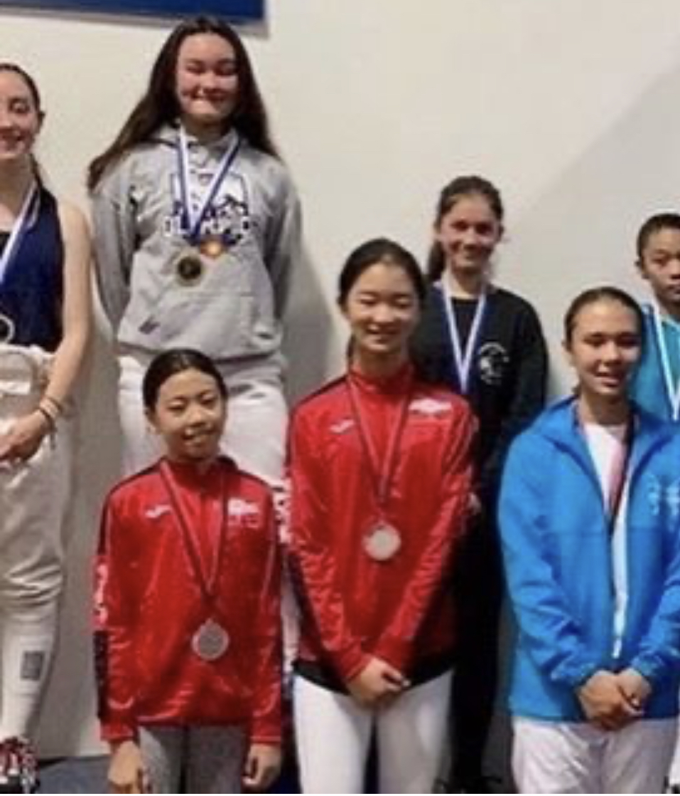

Home Page
Fencing
I started saber fencing in 7th grade, and I have improved as lot since. Especially for starting at Y14.

This is an example of when I recieved my first medal in Y14. This competition was a SYC and in LA, I got 80 points! I had only been fencing for a couple of months, and I had got 3rd place out of 17 people.